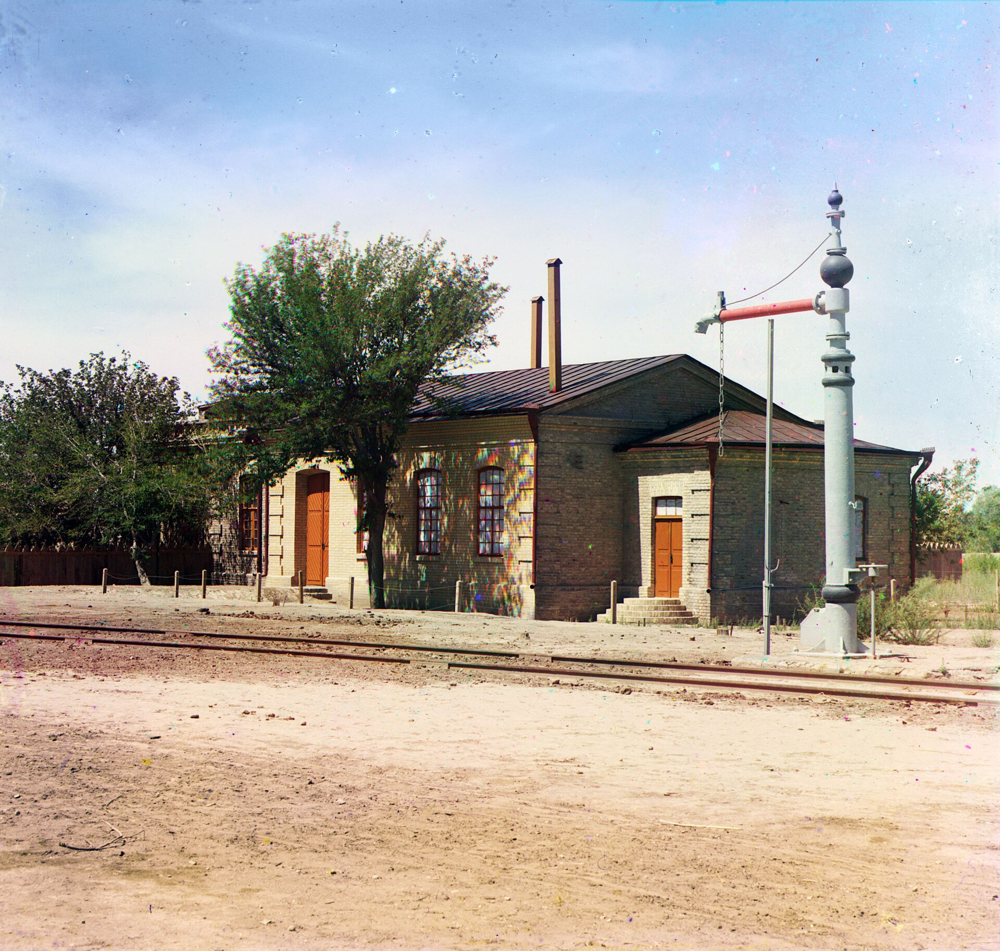

Migration and Urbanization in Turkestan under Tsarist Russia (1865–1917)
The flow of Russian settler colonists, the cotton economy, railways and the rise of new cities in Turkestan from the capture of Tashkent in 1865 to 1917.

The period from 1865 to 1917 was an era of profound transformation in Central Asian history. After the Russian Empire conquered the land of the ancient khanates, a new administrative order, waves of migration, a cotton-based economy and European-style cities took shape. The resettlement of Russian peasants from European Russia into Turkestan, the building of railways and the founding of new cities changed the lives of the local population completely. This article covers migration and urbanization during the Tsarist era — the sub-period that precedes the first wave of Uzbek emigration (1917–1934).
Conquest and the creation of the Turkestan Governor-Generalship
Russian forces took Tashkent in June 1865 under General Mikhail Chernyayev; at the time it was a walled city of around 70,000 inhabitants and a leading center of trade with Russia (Source: Encyclopaedia Britannica; Wikipedia, Russian Turkestan). In July 1867 the Turkestan Governor-Generalship was established with Konstantin von Kaufman as its first Governor-General and Tashkent as its capital (Source: Wikipedia, Turkestan Governor-Generalship). In 1868 Russian forces seized Samarkand and the Zeravshan valley from the Emirate of Bukhara (Source: Wikipedia, Russian Turkestan).
The Emirate of Bukhara became subordinate to Russia by an 1868 treaty and was formally made a protectorate in 1873; the Khanate of Khiva likewise became a protectorate in 1873, and the Amu Darya Division was carved out of its territory (Source: Wikipedia, Russian Turkestan). In 1876 the Khanate of Kokand was abolished and replaced by the Fergana Oblast (Source: Wikipedia, Russian Turkestan). By 1898 the Governor-Generalship had become a unified administrative structure of five oblasts.

Russian peasant resettlement (pereselenie)
From the late 19th century the Russian government encouraged the resettlement of Slavic peasants into the Asiatic regions of the empire, a policy meant to ease land hunger and social tension in central Russia and to secure the borders with loyal Europeans (Source: Oxford University Research Archive, 'Peasant Settlers and the Civilising Mission in Russian Turkestan'). Resettlement accelerated after the 1891 famine and especially during the Stolypin reforms (1906–1917) (Source: Wikipedia, Stolypin reform).
During the Stolypin reforms, from 1906 to 1912 up to 500,000 peasant households were transported from central Russia into Kazakhstan and the rest of Central Asia (Source: Wikipedia, Stolypin reform). Settlers received a small state subsidy, tax exemptions and the services of dedicated resettlement agencies, and were granted on average 16.5 hectares of land per man (Source: Wikipedia, Stolypin reform). Semirechye (Yetti Suv) became the principal destination for Slavic peasants.
The cotton economy and land pressure
Russia's need to supply its own textile industry turned Turkestan into a land of cotton monoculture. After the American Civil War of 1861–1865 shook the world cotton market, the empire rapidly developed local cotton growing under an 'import substitution' policy, introducing experimental stations and technical assistance (Source: Wikipedia, Russian Turkestan). As a result much of the arable land was converted to cotton; this sharply raised demand for land and water and generated competition and tension between local farmers and settlers.
Railways — the arteries of migration and economy
Construction of the Trans-Caspian (Transcaspian) Railway began in 1879–1880, tied to the conquest of Central Asia. The line reached Samarkand via Bukhara in 1888, then halted for about ten years before being extended to Tashkent and Andijan in 1898 (Source: GlobalSecurity.org; Wikipedia, Trans-Caspian railway). The permanent bridge over the Amu Darya (Oxus) was only completed in 1901 (Source: Wikipedia, Trans-Caspian railway).
The Orenburg–Tashkent Railway was built in 1901–1906, directly linking Turkestan with European Russia; the rail connection via Orenburg opened in 1905 (Source: GlobalSecurity.org; Wikipedia, Russian Turkestan). This line intensified the inflow of settlers and accelerated cotton exports. The railway station in Samarkand Oblast photographed by Prokudin-Gorsky in 1911 is a living witness to this new infrastructure.
Urbanization and the 'new cities'
The Russian administration built 'new cities' laid out on a European plan beside the old native cities. After Tashkent became the center of the Governor-Generalship in 1867, a new European city grew up beside the old Muslim town on the left bank of the Ankhor Canal (Source: Encyclopaedia Britannica; OrexCA). The new city was marked by a radial-ring layout, wide straight streets and public buildings in an eclectic and 'Turkestan Modern' style (Source: OrexCA).
The city was in effect divided into two parts — the Old City and the New City — a division that reinforced the colonial hierarchy spatially, with administrative and military centers often separated by canals (Source: Wikipedia, Russian Turkestan). Such new administrative towns arose across the region, altering the demographic makeup and accelerating urbanization.
Tension and legacy: up to the revolt of 1916
Land alienation and the influx of settlers deepened resentment among the local population, and this tension became the background to the Central Asian revolt of 1916. The decree of 25 June 1916 mobilizing the native population for rear-front labor (the 'mardikor' service) in the First World War triggered a mass uprising (Source: Wikipedia, Central Asian revolt of 1916). The Tsarist authorities' brutal suppression killed thousands, and many Kazakhs, Uzbeks and Kyrgyz fled toward China (Xinjiang). (The events of 1916 are covered in detail in a separate article.)
Conclusion
The Tsarist Russian period of 1865–1917 wove together the interconnected processes of migration, settler colonization, the cotton economy, railway construction and urbanization in Turkestan. These changes fundamentally reshaped the structure of local society and the demographic landscape, laying the historical groundwork for the first wave of Uzbek emigration (1917–1934) and the Soviet era that followed.

Sources
- Wikipedia — Russian Turkestan
- Wikipedia — Turkestan Governor-Generalship
- Wikipedia — Trans-Caspian railway
- Wikipedia — Stolypin reform
- Wikipedia — Central Asian revolt of 1916
- GlobalSecurity.org — Transcaspian / Central Asian Railway
- Encyclopaedia Britannica — Tashkent
- Oxford University Research Archive — Peasant Settlers and the Civilising Mission in Russian Turkestan, 1865–1917